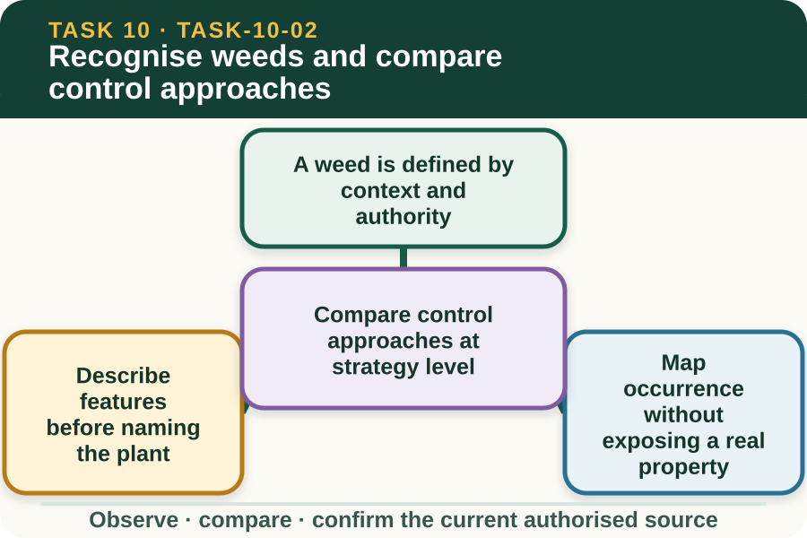
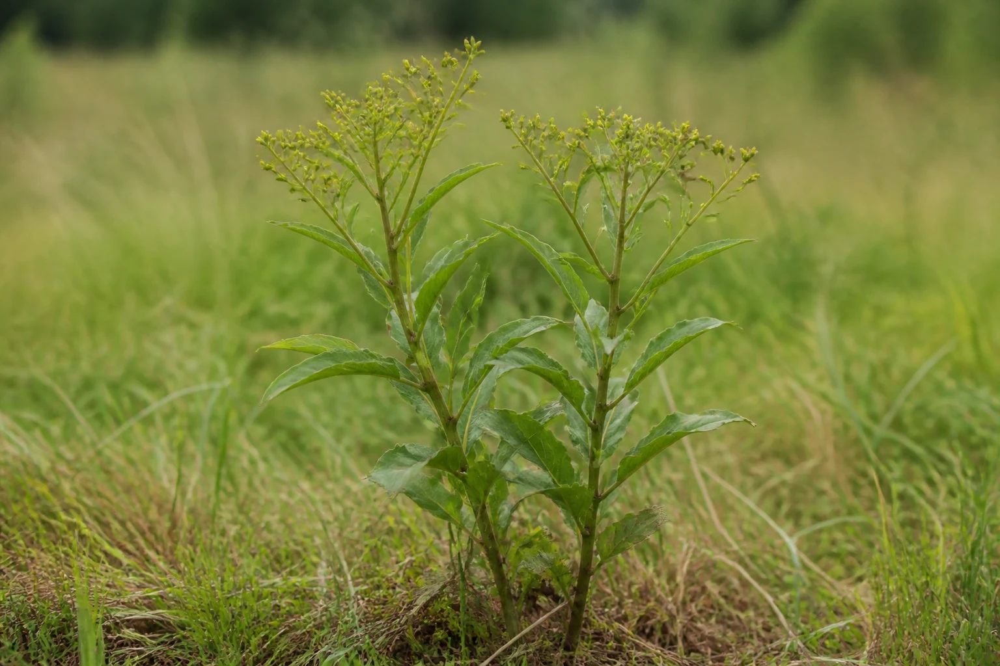

Learning purpose
Use observable features and an authorised identification source before comparing non-chemical and chemical options.
Task 10 · Lesson 2 of 4
Use observable features and an authorised identification source before comparing non-chemical and chemical options.
Learning purpose
Use observable features and an authorised identification source before comparing non-chemical and chemical options.
Success criteria
Learning boundary
Supplementary learning and formative practice only. Current RTO assessment, local procedures and authorised supervision control real work.

A weed is a plant growing where it is unwanted or creating an identified agricultural, environmental or workplace problem. A plant may be useful in one setting and a concern in another, so appearance alone does not establish the management decision.
Local and regulatory significance must be checked through current authorised sources. The learner records observations and location; the supervisor confirms identity, status and the management objective.

Useful observations may include growth form, leaf arrangement and shape, stem features, flowers or seed structures, growth stage, distribution and surrounding land use. Photographs should include both the whole plant and useful detail where the teacher permits.
Avoid certainty when key features are absent or the image is unclear. Record possible matches and the evidence still needed, then use a current authorised identification resource or expert confirmation.
A weed occurrence record connects the observation to a fictional or approved location, estimated extent, density description, growth stage, nearby sensitive features and date. Consistent terms make repeat observations comparable.
Public learning work must not publish a real farm map, access point, customer record or precise sensitive location. Use the teacher's privacy-safe map and the workplace's authorised system for real records.
Control approaches can be grouped broadly as prevention, cultural change, physical or mechanical action, biological management and chemical action. Their suitability depends on confirmed identity, purpose, scale, timing, surroundings, resources and authorised local requirements.
A learner can compare advantages, limitations and possible non-target effects without selecting a product or giving an operating method. The approved plan and supervisor decide what is used on the real site.
Fictional worked example
Observed evidence: On 8 March 2027, a fictional training map shows twelve similar rosette plants near a drainage line. The supplied photographs show leaf shape but no flowers, and two authorised identification cards remain possible matches. Decision and reason: Noah does not name the plant or recommend a treatment because identity and nearby sensitivity remain unresolved. Safe action: He records the observable features, extent, date and privacy-safe map zone and asks the supervisor what additional identification evidence is required. Result: The supervisor schedules an authorised identification check before any management option is considered. Next check or record: Noah updates the occurrence record with the confirmed identity source and leaves the control decision blank until authorised.
Integrated management considers why the plant is present, how it may spread, how actions affect non-target species and how success will be monitored. A single action may reduce visible plants without addressing reinfestation or movement pathways.
The planning question is therefore broader than how to remove it. Ask what outcome is sought, what sources control the decision, what unintended effects matter and what evidence would show change over time.
A strong occurrence report distinguishes confirmed facts, possible identification, missing evidence and the person who must decide. It avoids copied web images without provenance and does not convert a common name into a legal or operational conclusion.
Where the inclusion of a unit, local weed status or management requirement is unconfirmed, staff records use Teacher/RTO to confirm. Student learning stays focused on observation, source selection and safe referral.
External media loads only after you choose it.
Source-linked video
Why watch: See which features are useful to record before comparing management options.
Watch for: Which observable plant features should be recorded before an authorised identification source is checked?
Formative practice
Each option explains the consequence. These answers save only on this device.
Written application
Apply and keep a learning record
Annotate supplied privacy-safe plant images, match visible features to authorised identification cards and mark the confidence gap. Add strategy-level questions for the supervisor; do not propose a product or work method.
Learning record: A supplementary-learning occurrence record and identification-source comparison.
Lesson responses and the activity are formative learning only. Formal sufficiency and competence remain with the current RTO process.
Source basis: AHCPMG201 Release 1 concepts for recognising and recording weed occurrence and discussing control options under supervision, plus the NESA Chemicals focus area. All local identity status and management decisions require authorised sources.